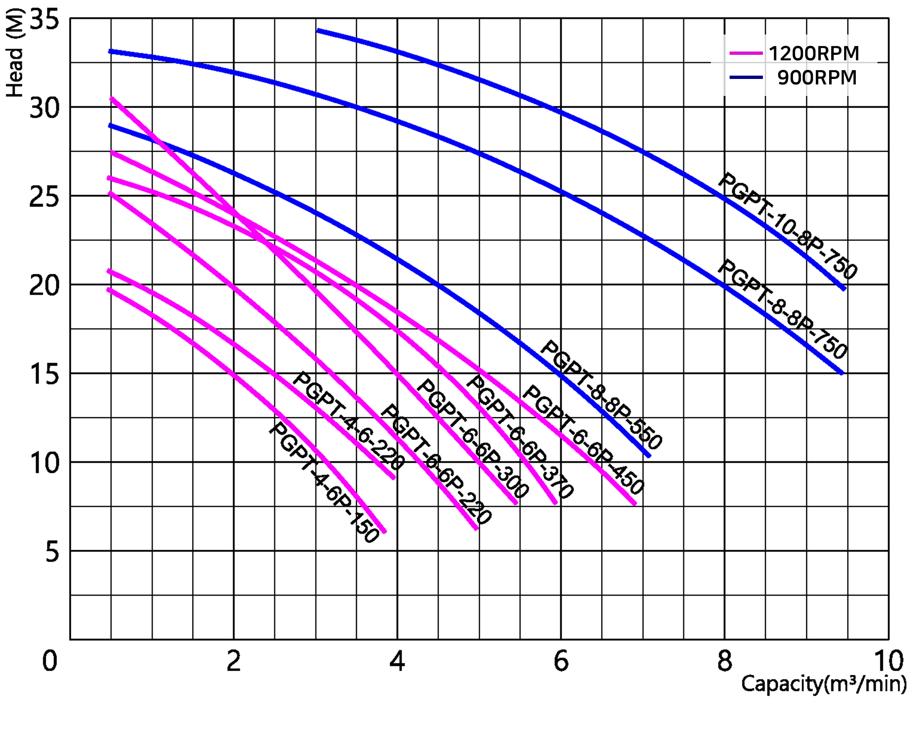

-
-
용도
- Impeller 하부에 설치된 특수 Cutter Fan에 의하여 침전 축적된 토사, 곤죽흙 등을 교반 하면서 배출할 수 있다. 또 특수강 소재를 사용하므로 내구성이 강하다.
- 준설 작업에 의하여 토사 곤죽흙의 채취, 배출, 구조 설비의 슬러지 및 스케일이 포함 된 용수 및 레미콘 플랜트 배출설비 등에 최적이다.
특징
- 지하철, 고층건물 지하실 공사
- 항만, 하천공사의 준설작업
- 모래채취용
- 상수도 침전시 청소용
- 제철소 용제 청소용
- 화물선 선저청소용
- 레미콘 공장 재활용 플랜트 설비용
APPLICATIONS
- Extracting sand of remicon plant
- Dredging operation in harbor
- Moving gravel and sand
- Drainage from construction site
- Draniage of underground construction
- Draniage and supplying of tunnel construction
FEATURES
- In crease of the abrasive resistance by using
- High Chrome of impeller and Agitator
- Smoothed drainage of Sediment and sand by agitato
- Easy to carry with light weight
- Perfect watertight with double mechanical seal
성능 곡선도 (Performance Curve)

표준사양 (Standard Specifications)
조립 단면도 (Sectional Drawing)
외형치수도 (Outline Drawing and Size)